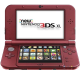

You must follow these steps exactly.
Only proceed with this guide if your system looks like the following picture.
Guide
- Copy all the files to the SD Card.
- Backup your files before proceeding.
- Open the music app and run Soundhax for the New 3DS.
- It will now downgrade your system. Be Patient, it can take up to 10 minutes.
- Do not put the system to sleep. It will brick the system.
- Run Safehax and your system will boot into custom firmware.